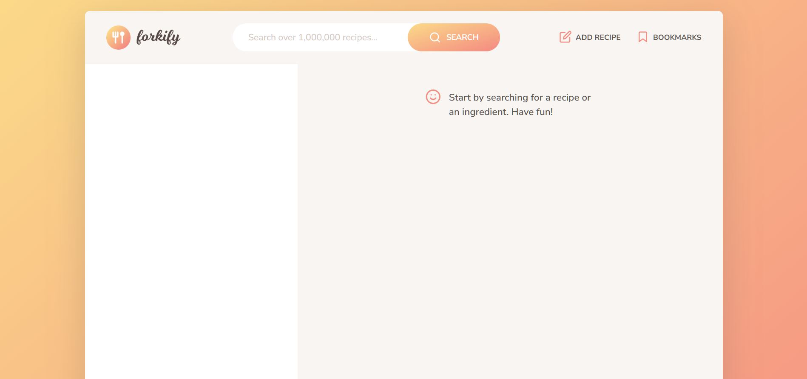

Forkify
A followthrough project from a JavaScript udemy course by jonas schmedtmann.
Hi, I'm Sina. I enjoy improving myself and taking part in challenges in different areas of life and especially in programming, I just have a special passion for it. Everyday i strive to be better than yesterday and i enjoy it.
A followthrough project from a JavaScript udemy course by jonas schmedtmann.
A clone of Strava's old landing page. Built with HTML & CSS & a little bit of JavaScript.
A follow through project from a udemy course by jonas schmedtmann.
Another app built with customtkinter to add, edit, delete students from a database.
A simple pomodoro app built with python using customtkinter library. The settings can be changed and it also has some graphs.

A simple machine learning project with convolutional neural networks to detect clothe types from 256x256 images. The dataset was taken from kaggle and the model reached 93.5% accuracy.
Simple Machine Learning project using convolutional neural networks to predict digits 0 to 9 from 256x256 images. Dataset was taken from kaggle. Model has an accuracy of 99.4%.